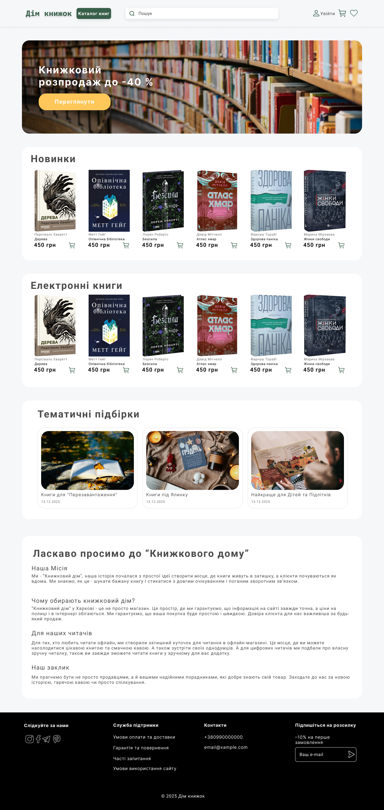

Про мене
Освіта та діяльність
Я здобуваю вищу освіту в Національному аерокосмічному університеті "Харківський авіаційний інститут" на факультеті літакобудування за спеціальністю "Екологія". У межах навчання я обрала курс "Веб-дизайн", який вивчаю саме зараз. Цей курс дозволяє мені опанувати принципи створення сучасних інтерфейсів та застосовувати їх на практиці при розробці сайтів.
Мої захоплення
Поза навчанням я люблю проводити час активно та творчо. Одне з моїх улюблених хобі - фотографування архітектури та міських пейзажів, це допомагає мені розвинути увагу до деталей. Також я цікавлюся сучасною літературою та кіно, що є чудовим джерелом натхнення.. Окрім цього я захоплююся відеоіграми, що дозволяє розвивати стратегічне мислення та швидкість прийняття рішень.
| Технологія | Рівень | Досвід |
|---|---|---|
| HTML | Початківець | 2 місяці |
| Figma (UI/UX) | Середній | 1 рік |
| Основи CSS | Початківець | 1 місяць |
| JavaScript | Початківець | 1 місяць |
| Git / GitHub | Початківець | 1 тиждень |
Мої перші проєкти
Ось приклад макета сайту, який я спроєктувала під час вивчення UI/UX дизайну:
